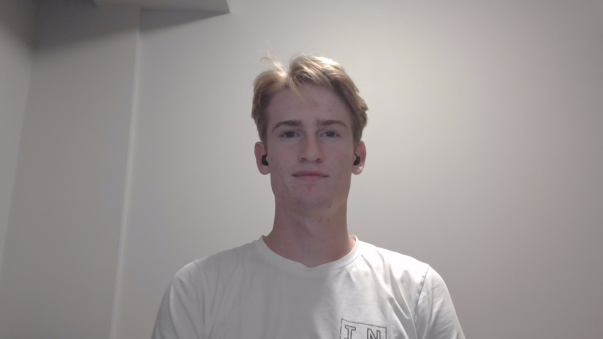

The Gabe Carlson Experience

Contact me through Discord here:
TwiceBaked#6902
Introduction
My name is Gabe Carlson. I am the youngest of 5 and self proclaimed favorite.
I grew up in Monee, IL on a little hobby farm, which is about 45 minutes from Lewis University.
My siblings and I grew up riding horses, raising chickens, growing gardens, and fishing in our back yard.
I am a Computer Science major that has no idea what kind of concentration to go into.
What I Hope to Learn
- A better understanding of general computing
- Baseline knowledge of more coding languages
- More coding experience
- Experience with working in group coding projects
My Favorite Hobby
Downhill skiing is my all time favorite hobby.
It may be an expinsive hobby, but the joys, experiences, and memories that I have gotten from skiing have been amazing.
I was so young when I first started skiing that I don't remember the first time I skied.
For the past couple of years, I have been able to travel out west and ski the Rockies.
This has made winter my favorite season, and it isn't even close.
My Fun Fact
I was homeschooled all the way up til the age of 16 when I started attending community college.